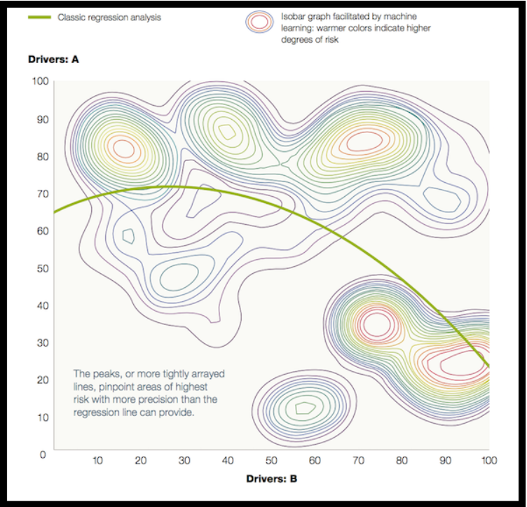

Big Data & Machine learning
- Gabriel BARBE
Pour la réalisation de ce cours, j'aurais deux sources principales :
- Les big data : un art de la décision par Eglantine Schmitt. Un livre traitant de la philosophie des sciences s'appuyant sur une enquête de terrain de plusieurs années.
- Initiez-vous au Machine Learning, cours dispensé sur le site openclassrooms que vous pouvez trouvez ici.
La science de données qu'est-ce que c'est ?
Les entreprises utilisatrices de data sciences aujourd'hui utilisent les données des utilisateurs afin de prendre des décisions. Pour certaines entreprises, le flux de données est gigantesque et les données revêtent une importance capitale car au coeur de nombreux business model (cours sur le business model par ici). Pour une entreprise du numérique, ne pas utiliser les données équivaut de nos jours à un suicide stratégique.
Mais d'où vient cette nouvelle pratique ?
A l'aube du numérique, les premiers développeurs ont créé une infinité de programmes et de fonctions. Dans un souci d'amélioration et de résolution de potentiels problèmes, ils ont pris l'habitude d'utiliser des "logs" afin d'avoir accès aux "traces" laissées par les utilisateurs. C'est le commencement des données web et aujourd'hui encore, tout ce que nous produisons sur le web laisse des "traces" utilisées de différentes manières. Pourtant les données ne sont pas exclusivement "web", repartons donc de la définition :
- Donnée : Résultat d'observation ou d'expérience faite délibérément ou à l'occasion d'autres taches et soumis au méthode statistique.
Ce qui a changé de nos jours, c'est le nombre de données possiblement traitable, nos outils de modélisation sont si performants et prévoyant que les données sont une source d'informations sans fin.
Les différentes problématiques
Dans un premier temps donc, les données furent conçues pour répondre aux problèmes rencontrés lors de l'utilisattion de programmes, et elles le sont toujours. A l'échelle individuelle les données d'utilisation permettent de déceler à quelle moment se trouve le défaut de fonctionnement.
Avec la révolution numérique et l'abondance de ces données, les entreprises ont commencé à utiliser ces données de manière statistique. En étudiant les courbes formées par les données, on pouvait désormais comprendre l'utilisation des applications et prévoir celle des nouveaux utilisateurs. On peut désormais répondre à un besoin qui n'est même pas conscient chez les utilisateurs.
L'avènement des réseaux sociaux a dynamisé le secteur des données et en a fait un commerce fructueux car les données sont désormais devenu un produit de ventes.
En terme plus général et chez des entreprises moins intrusive et plus petite, les données sont aussi utilisé pou répondre à des problèmes bien spécifique. Le désavantage de cette science et que cela prend fatalement du temps de produire et collecter ces données, les données en tant que tel doivent être nombreuses pour être exploitables et doivent donc avoir été collecté sur une période conséquente en amont. De plus, l'analyse de données n'est pas une baguette magique et ne permet pas de tout résoudre !
Data Science et Analyse de données
Les Data Sciences se distinguent de l'analyse de données classique de par ses méthodes hautement basé sur le numérique notamment le machine learning. Là où l'analyse de donnés utilise des méthodes statistiques classiques, les data sciences utilisent des outils algorithmiques poussés permettant une meilleur exploitation des données.
On peut observer ci-dessous une carte reflétant la différence entre ces deux disciplines sur un exemple de risque de désabonnement selon deux critères :
.
Le travail d'un data scientist se divise en plusieurs parties : dans un premier temps il se concentre sur la collecte et et le nettoyage des données, cette partie n'est pas réellement technique et s'avère chronophage mais elle est cependant essentielle ! L'arme principale d'un data scientist est la data. Dans un deuxième temps, sa mission consiste en l'exploration des données. C'est un long travail de réflexion : quels paramètres de ces données nous intéressent, selon quels axes faut-il analyser ces données... Ensuite, le data scientist continue son cycle de travail par la modélisation de ces données. C'est là que se reflète sa réelle valeur ajouté comme vous pouvez le voir sur la carte ci-dessous. C'est pour cette partie que l'on constate l'utilisation du fameux machine learning.
Finalement, suite à cette modélisation il peut interpréter ses résultats et les exploiter.
Le machine learning
Sujet passionnant mais souvent mal compris dans les discussions populaires, on va tenter de comprendre ici ce qu'est le machine learning.
Ce sous-domaine de l'intelligence artificielle qui défraie la chronique et fait craindre la perte d'emploi à de nombreux citoyens, avec raison ou non ce n'est pas à moi d'en décider, est un procédé permettant d'apprendre à une machine à effectuer des taches toute seule. Ce procédé, détaillé sur de nombreux sites (https://datascientest.com/machine-learning-tout-savoir/) ou sur notre cours référence dont le lien est en haut de la page, se compose en 4 étapes clés :
- Collecte et nettoyage des données d'entrainement
- La sélection de l'algorithme : régression linéaire, tissue neuronale, random forest (Je vous invite à consulter ce site afin d'en apprendre plus sur les différents algorithme existant (https://mobiskill.fr/blog/conseils-emploi-tech/quels-sont-les-differents-algorithmes-en-machine-learning/)).
- L'entrainement de la machine : La machine suit son algorithme avec les données entrées puis le data scientist analyse les erreurs et reprend à l'étape 1 si erreur il y a.
- L'utilisation dans le monde réel et l'amélioration continue du modèle.
Les différents algorithmes de machine learning existant peuvent être réparties en une multitude de catégories. On notera notamment les catégories suivantes qui sont essentielles : - Algorithme supervisé : l'apprentissage s'effectue avec des données dont on a déjà les résultats. Prenons l'exemple d'une photo qui veut associer un chat, l'algorithme trouvera des caractéristiques entre l'image et le chat et cela lui permettra de reconnaitre un chat dans le futur.
- Algorithme non-supervisé : l'apprentissage s'effectue sans résultats connus, la machine trouvera des caractéristiques communes à des images par exemple et les classera selon ces caractéristiques.
Il existe encore d'autres catégories mais celles-ci sont les plus intéressante, on peut aussi parler des algorithme de classification ou de régression qui traite respectivement des données qualitative ou quantitative.
Une nouvelle vision de la société
Maintenant que nous avons vu quelques aspects technique, nous pouvons discuter de tout ce qu'engendre ces nouvelles techniques.
Le Business de données
Revenons à notre exemple des réseaux sociaux qui ont bati leur business model sur le business de données. Si vous avez quelques minutes à perdre, vous pouvez ouvrir votre compte Facebook, aller dans les paramètres généraux de votre compte -> "Télécharger mes données" ou encore plus surprenant "Activités en dehors de Facebook". Bien que nous soyons de plus en plus au fait de l'exploitation qui est faite de nos données, ce procédé vous fera surement découvrir que de nombreuses applications que vous ne suspectiez même pas fournissent des données à Facebook (Bubble par exemple, je ne leur ai jamais donné l'autorisation).
Cette nouvelle possibilité pousse les entreprises à créer de plus en plus de moyens d'obtenir ces données et a ne pas en faire un usage exclusif.
Des enjeux sociologiques
L'avènement du Big Data n'a pas que des mauvaises conséquences bien sûr et c'est même une technologie tout à fait remarquable d'un point de vue technique, les données peuvent tout prédire.
Pourtant cela pose même un problème philosophique, entre-t-on dans un ère de déterminisme sociologique ? Je m'explique. A l'heure du machine learning, dont on a exploré les possibilités plus haut, nous pouvons modéliser et prévoir bien plus de choses qu'auparavant. Les données laissées sur le web sont telles que nous pouvons désormais prédire une épidémie de grippe par les simples données de recherches Google et un candidat à la présidentielle peut même influencer le score en sa faveur via les articles apparaissant sur Facebook pour une population cible (The Great Hack : Cambridge Analitica, 2019, Netflix). Ces données donnent donc un pouvoir sans précédent au niveau mondiale et nous sommes en position de nous demander, sans rentrer dans une paranoïa, quelles sont les possibilités de lutte contre ces pouvoirs.